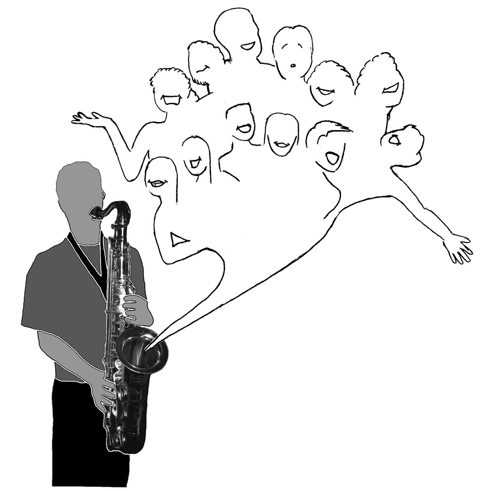

Sax Magic (1998)
This image was the program and poster art for the spring 1998 Cal Jazz Choir concert. It was the last of the four images that I drew of the Jazz Choir, and my memory of it is bitter-sweet, since my time with them was coming to an end. Fortunately, I have had the joy of singing occasionally with many of them and other great artists in the years since. The members that inspired each caricature are (with recent name changes in parentheses, when I could find them) from left, front row: Helen Pogrel, Alyson Cabrera, Albert Choi, Corbi Wright, Kevin Lam, back row: Jessica Reeder, Ken Carlile, Malcom Darrell, me, Susan Garcia (Martin), Michelle Bloom (Goetzl), and Sarah Aldinger.
The saxophonist was none other than Dan "the Sax Man" Schlessinger, who used to play in the wee hours of the night in the alley-ways of the Cal Berkeley campus (yet one more person who helped me to fall in love with my school). I was thrilled that he agreed to pose for the photo. I had originally promised him that he wouldn't appear in the final version, since I had planned to create a CG saxophone, as I did earlier with the piano (see Jazz Piano 1996). But the burden of constructive solid geometry proved too much for me, and instead I turned to photoshop to block-out Dan's face, lest he become the central focus of the image. Sorry, Dan!
© W. Rhett Davis 1998